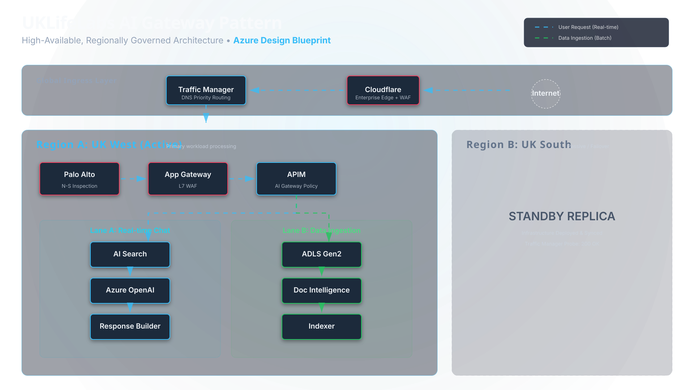
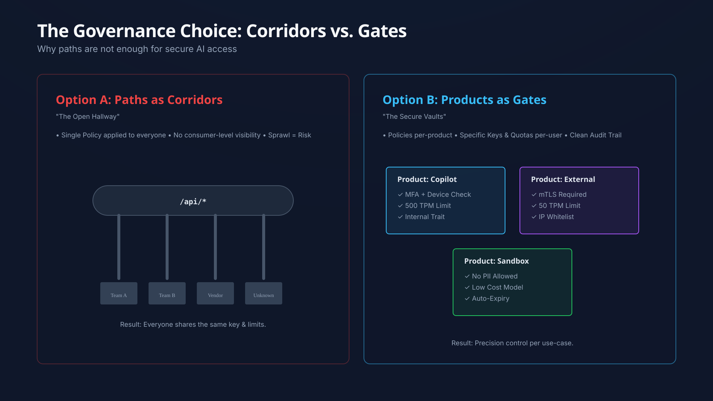
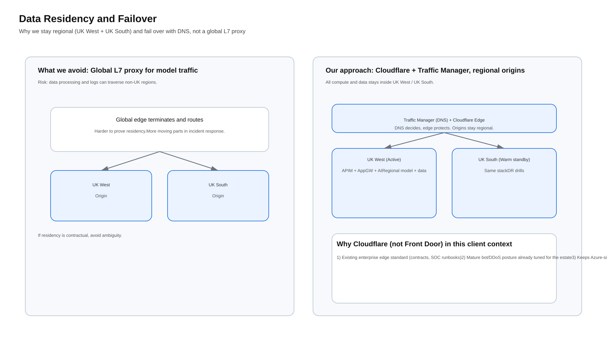
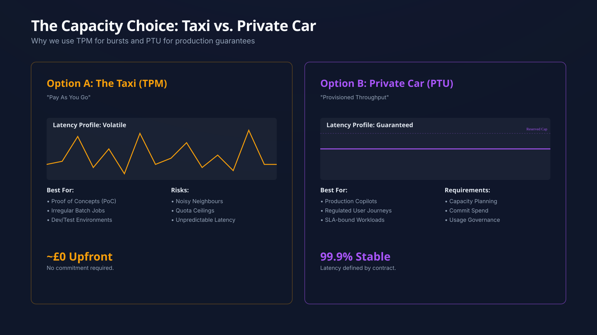
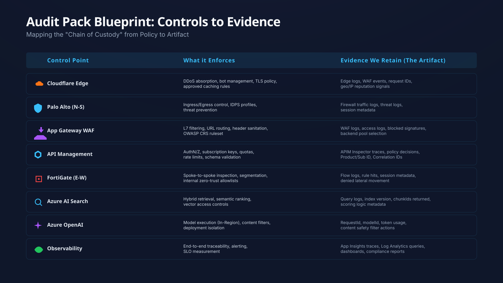
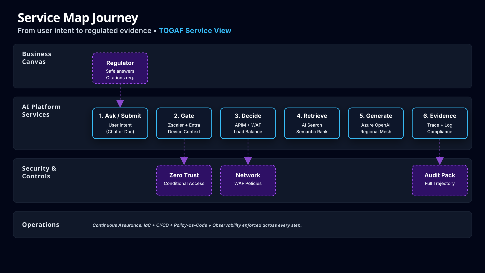

That is the moment most AI pilots fail.
UKLifeLabs doesn’t ship pilots. We ship standards.
This post explains the AI Gateway architecture we use to keep copilots:
- Regional: pinned to UK West + UK South
- Governed: APIM Products, not just routes and paths
- Provable: audit trails you can hand to assessors
Fact check for geography: Azure’s UK regions are UK South and UK West. UKLifeLabs uses these two regions to meet sovereignty and resilience requirements.
Challenge 1: The Perimeter Fallacy
The Stakeholder: "We already pay for Palo Alto and FortiGate. Why are you proposing Application Gateway, Cloudflare, APIM, and Traffic Manager on top?"
The Principle: "Firewalls protect networks. They don’t govern APIs. Our Copilot is an API product, not a web page."
What Palo Alto + FortiGate do best
- Network segmentation and enforcement (north-south and east-west)
- Threat prevention and baseline perimeter controls
- Enforced routing via hub patterns and UDRs
What they do not replace
- Application-level routing (host/path/header behavior, probes, TLS handling)
- API governance (consumer entitlements, quotas, lifecycle, consistent auth policy)
- Copilot controls (per-consumer usage plans, token budgets, traceability hooks)
Decision 2: Separation of Concerns (Ingress vs Firewall)
The Architecture: "Palo Alto decides whether a request can enter the estate. Application Gateway decides where the request goes inside Azure, with web-grade controls."
Why Application Gateway "shines" in this pattern
Application Gateway is built for Azure-native Layer 7 concerns:
- Host and path-based routing for multiple lanes (chat vs ingestion)
- WAF policy close to workloads
- Consistent TLS behaviors and backend health probing
- Cleaner ownership split: platform team owns app ingress patterns without turning firewall changes into release blockers
The Reality: "Firewall rules should move slowly. App routing changes every sprint. Mix them and you create exceptions. Exceptions become bypasses. Bypasses become findings."
Decision 3: Edge Strategy (Cloudflare vs Azure Front Door)
This is not a "feature debate." It is an operating model decision.
What Azure Front Door is good at
Front Door is a strong Azure-native global edge service. For internet-first, globally distributed apps, it can be a great fit.
Why UKLifeLabs often keeps Cloudflare
UKLifeLabs prioritises a few realities common in UK financial services:
- Edge standardisation across vendors and clouds
Cloudflare is often already the approved edge control plane. Replacing it is governance-heavy and slow. - Edge security posture that’s already tuned
Bot patterns, WAF rules, rate limits, and operational playbooks already exist. Rip-and-replace near go-live is risk. - A clean sovereignty story
UKLifeLabs wants the processing story to be simple: "We operate within UK West and UK South." Adding an additional global edge layer can complicate narrative and troubleshooting.
Pattern 4: Multi-Region High Availability
Because it solves a different job than Cloudflare.
Traffic Manager is DNS-based routing, used to steer clients to regional endpoints based on health and routing policies.
UKLifeLabs uses Traffic Manager to implement:
- Regional failover: UK West ↔ UK South
- Planned maintenance routing
- Health-probe-driven endpoint selection
Cloudflare can load-balance too. Traffic Manager keeps regional failover logic inside the Azure operating model, which helps platform teams, incident response, and auditors.
Defense in Depth: Workforce Zero Trust
Common Question: "We already have Cloudflare. Why do we need Zscaler?"
Because Zscaler is typically about workforce and egress, not public ingress.
What Zscaler adds
- Secure user-to-internet and user-to-SaaS controls (policy, inspection, governance)
- Zero Trust access to private apps without expanding network reachability like classic VPN models
- A stronger "who accessed what" story for admins, engineers, and operators
The Differentiator: "Cloudflare protects the front door. Zscaler controls how our people reach internal services and what leaves the building."
The Target Architecture: The UKLifeLabs AI Gateway
Lane A: Chat (real-time)
- User enters via Cloudflare
- Traffic is enforced by Palo Alto (north-south)
- Application Gateway (WAF) routes to the right internal entry
- APIM enforces identity, product entitlements, quotas, and policy
- Backend calls:
- Azure AI Search (retrieval)
- Azure OpenAI / Foundry model deployment (generation)
- Response returns with citations + correlation IDs
Lane B: Ingestion (batch, controlled)
- Ingestion hits a separate APIM Product (different entitlements)
- Content is processed:
- Document Intelligence (structure extraction)
- chunking
- indexing into Azure AI Search
- Index versions are promoted with approvals, not ad hoc pushes

Get the AI Gateway Accelerator
Launch your regulated copilot platform faster. Download the complete implementation suite including:
- APIM Policy Snippets (Token budgeting, rate limiting)
- Terraform Modules (App Gateway + WAF)
- Audit Log Schemas (KQL queries)
Governance Model: Corridors (Paths) vs Gates (Products)
Concept: "Paths are corridors. Products are gates."
Paths are corridors
Using only paths like /internal/* and /external/* makes governance soft:
- Consumer lifecycle becomes ad hoc
- Quotas become blunt (one size fits all)
- Segregation of duties blurs (app teams end up owning access decisions)
- Audit questions become hard: "Which consumer had what access last month?"
Products are gates
APIM Products create explicit governance boundaries:
- Consumers subscribe to a Product, not just an API
- Product policies enforce:
- identity
- per-consumer quotas
- approved operations
- consistent transformations and telemetry
- Audit narrative becomes simple:
- "Consumer X had Product Y from date A to B under policy version Z."

Sovereignty Strategy: Regional by Design
UKLifeLabs treats data residency and processing locality as a first-order constraint.

Why "Regional" beats "Global" for regulated AI
- Global deployment types can introduce ambiguity about where processing occurs
- For regulated content and prompts, UKLifeLabs requires processing aligned to UK regions
UKLifeLabs standard
- Deploy the AI stack in UK West + UK South
- Keep storage, indexing, retrieval, and inference within UK regions
- Use Azure Policy to restrict resource deployments to approved regions
- Use Landing Zone guardrails so the platform is enforceable, not advisory
Capacity Strategy: Throughput Modes (TPM vs PTU)
This is where pilots die in production.
TPM is a taxi
- Fast to start
- Great for pilots
- Shared capacity behavior can be unpredictable at peak
- Throttling surprises show up during leadership demos
PTU is a private car
- Reserved and predictable throughput
- Better control of performance under load
- Requires capacity planning and cost discipline
UKLifeLabs’ rule:
- TPM for early experimentation and non-critical usage
- PTU for production lanes with resilience requirements and impact tolerance constraints

Pattern: Regulatory-Aware RAG
UKLifeLabs treats Retrieval-Augmented Generation as a controlled pattern, not a dev convenience.
The baseline pattern (the "gold standard" starting point)
- azure-search-openai-demo is a widely used reference implementation for "chat over your data"
- It demonstrates ingestion + Azure AI Search retrieval + grounded responses
What UKLifeLabs adds for financial services regulation
- Document Intelligence–driven ingestion to preserve structure (tables, sections, headings)
- Hybrid retrieval (keyword + vector) using Azure AI Search
- A controlled taxonomy and metadata discipline inspired by financial services data models
- Evidence-grade response metadata:
-
cat response_metadata.json
{
"requestId": "req-12345",
"indexVersion": "v2026.01.21",
"docIds": ["policy-uk-01", "risk-assessment-v2"],
"modelDeploymentId": "gpt-4-32k"
}
-
Future-Proofing: The "Agent-Ready" Gateway
We are not just building for chatbots. We are building for Autonomous Agents.
Using the "5 Blocks of AI Agents" pattern (as defined by Sam Bhagwat, Founder of Mastra), this architecture explicitly secures the critical components needed for agentic workflows:
Compliance Strategy: Evidence as a Product
Principle: "Auditors don’t want confidence. They want artifacts."
UKLifeLabs builds an evidence pack using:
- Microsoft Service Trust Portal for Microsoft audit reports and compliance artifacts
- Defender for Cloud Regulatory Compliance for continuous posture tracking
- Azure Policy (built-ins + initiatives) as enforceable guardrails
- Policy-as-code patterns from public repos to avoid "hand-crafted compliance"
Operational Excellence: DevSecOps for AI
The Standard: "If gateway rules aren’t versioned, tested, and promoted like code, they will drift."
UKLifeLabs standardises:
- IaC for landing zones, policies, APIM configuration, and ingress
- Shift-left security and supply chain hygiene (secrets, dependencies, scanning)
- Release gates that stop "hot fixes" from bypassing controls
- Repeatable deployment across UK West and UK South with the same policy baseline

Service Architecture: The Request Journey
Leadership doesn’t buy boxes. They buy services and journeys.
Business Journey: "Regulatory Query to Evidence"
- Request intake (who, why, case ID)
- Policy decision (is the user allowed, which corpus scope)
- Retrieval and reasoning (which sources were used)
- Response delivery (answer + citations)
- Evidence trail (correlation IDs + versioned artifacts)

Technology services that support the journey
- Edge access: Cloudflare
- Network control: Palo Alto, FortiGate
- App routing: Application Gateway (WAF)
- API governance: APIM Products
- Retrieval: Azure AI Search (hybrid)
- Inference: Azure OpenAI / Foundry (regional deployments)
- Workforce control: Zscaler
- Compliance posture: Defender for Cloud + Policy + Trust reports
9. YouTube Videos & Microsoft Learn References
Essential YouTube Videos
Azure API Management Products Explained
Azure APIM Deep Dive (Architecture)
Azure OpenAI Deployment Types
Microsoft Cloud for Financial Services
Architectural Assumptions & Constraints
This pattern is designed under specific constraints common to regulated industries. These boundary conditions define the valid use cases for this architecture.
Key takeaways (UKLifeLabs standards in one view)
- Palo Alto / FortiGate secure the network boundary. They do not replace L7 routing or API governance.
- Application Gateway is the Azure-native L7 control point. It keeps app routing out of firewall change queues.
- Cloudflare is chosen when it is the enterprise edge standard and the sovereignty narrative must stay simple.
- Traffic Manager provides DNS-level regional failover across UK West and UK South.
- Zscaler hardens workforce access and egress policy. It reduces "VPN trust" patterns.
- APIM Products are gates, not corridors. They enforce entitlements, quotas, and clean audit boundaries.
- Regional deployments + Azure Policy make sovereignty enforceable, not aspirational.
References & Further Reading
- Document Intelligence RAG
- Azure Search OpenAI Demo
- Azure Search Vector
- FSI Common Data Model
- CAF for Financial Services
- Microsoft Service Trust Portal
- Defender for Cloud Regulatory Compliance
- Azure Policy Repository
Join the Conversation
Discuss this architecture pattern on LinkedIn.
Ready to operationalize your Azure journey?
I help organizations turn stalled cloud initiatives into execution engines.